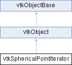

|
Etrek
|
|
Etrek
|
Traverse a collection of points in spherical ordering. More...
#include <vtkSphericalPointIterator.h>

Public Types | |
| enum | AxesType { XY_CW_AXES = 0 , XY_CCW_AXES = 1 , XY_SQUARE_AXES = 2 , CUBE_AXES = 3 , OCTAHEDRON_AXES = 4 , CUBE_OCTAHEDRON_AXES , DODECAHEDRON_AXES = 6 , ICOSAHEDRON_AXES = 7 } |
| enum | SortType { SORT_NONE = 0 , SORT_ASCENDING = 1 , SORT_DESCENDING = 2 } |
Public Member Functions | |
| void | SetAxes (int axesType, int resolution=6) |
| void | GoToFirstPoint () |
| bool | IsDoneWithTraversal () |
| void | GoToNextPoint () |
| void | GetCurrentPoint (vtkIdType &ptId, double x[3]) |
| vtkIdType | GetCurrentPoint () |
| vtkIdType | GetPoint (int axis, int ptIdx) |
| vtkIdType | GetNumberOfAxes () |
| void | GetAxisPoints (int axis, vtkIdType &npts, const vtkIdType *&pts) VTK_SIZEHINT(pts |
| void | BuildRepresentation (vtkPolyData *pd) |
| vtkSetSmartPointerMacro (DataSet, vtkDataSet) | |
| vtkGetSmartPointerMacro (DataSet, vtkDataSet) | |
| vtkSetSmartPointerMacro (Axes, vtkDoubleArray) | |
| vtkGetSmartPointerMacro (Axes, vtkDoubleArray) | |
| vtkSetClampMacro (Sorting, int, SORT_NONE, SORT_DESCENDING) | |
| vtkGetMacro (Sorting, int) | |
| void | SetSortTypeToNone () |
| void | SetSortTypeToAscending () |
| void | SetSortTypeToDescending () |
| bool | Initialize (double center[3], vtkIdList *neighborhood) |
| bool | Initialize (double center[3], vtkIdType numNei, vtkIdType *neighborhood) |
| bool | Initialize (double center[3]) |
| Public Member Functions inherited from vtkObject | |
| vtkBaseTypeMacro (vtkObject, vtkObjectBase) | |
| virtual void | DebugOn () |
| virtual void | DebugOff () |
| bool | GetDebug () |
| void | SetDebug (bool debugFlag) |
| virtual void | Modified () |
| virtual vtkMTimeType | GetMTime () |
| void | RemoveObserver (unsigned long tag) |
| void | RemoveObservers (unsigned long event) |
| void | RemoveObservers (const char *event) |
| void | RemoveAllObservers () |
| vtkTypeBool | HasObserver (unsigned long event) |
| vtkTypeBool | HasObserver (const char *event) |
| vtkTypeBool | InvokeEvent (unsigned long event) |
| vtkTypeBool | InvokeEvent (const char *event) |
| std::string | GetObjectDescription () const override |
| unsigned long | AddObserver (unsigned long event, vtkCommand *, float priority=0.0f) |
| unsigned long | AddObserver (const char *event, vtkCommand *, float priority=0.0f) |
| vtkCommand * | GetCommand (unsigned long tag) |
| void | RemoveObserver (vtkCommand *) |
| void | RemoveObservers (unsigned long event, vtkCommand *) |
| void | RemoveObservers (const char *event, vtkCommand *) |
| vtkTypeBool | HasObserver (unsigned long event, vtkCommand *) |
| vtkTypeBool | HasObserver (const char *event, vtkCommand *) |
| template<class U, class T> | |
| unsigned long | AddObserver (unsigned long event, U observer, void(T::*callback)(), float priority=0.0f) |
| template<class U, class T> | |
| unsigned long | AddObserver (unsigned long event, U observer, void(T::*callback)(vtkObject *, unsigned long, void *), float priority=0.0f) |
| template<class U, class T> | |
| unsigned long | AddObserver (unsigned long event, U observer, bool(T::*callback)(vtkObject *, unsigned long, void *), float priority=0.0f) |
| vtkTypeBool | InvokeEvent (unsigned long event, void *callData) |
| vtkTypeBool | InvokeEvent (const char *event, void *callData) |
| virtual void | SetObjectName (const std::string &objectName) |
| virtual std::string | GetObjectName () const |
| Public Member Functions inherited from vtkObjectBase | |
| const char * | GetClassName () const |
| virtual vtkTypeBool | IsA (const char *name) |
| virtual vtkIdType | GetNumberOfGenerationsFromBase (const char *name) |
| virtual void | Delete () |
| virtual void | FastDelete () |
| void | InitializeObjectBase () |
| void | Print (ostream &os) |
| void | Register (vtkObjectBase *o) |
| virtual void | UnRegister (vtkObjectBase *o) |
| int | GetReferenceCount () |
| void | SetReferenceCount (int) |
| bool | GetIsInMemkind () const |
| virtual void | PrintHeader (ostream &os, vtkIndent indent) |
| virtual void | PrintTrailer (ostream &os, vtkIndent indent) |
| virtual bool | UsesGarbageCollector () const |
Public Attributes | |
| void | npts |
Protected Attributes | |
| vtkSmartPointer< vtkDataSet > | DataSet |
| vtkSmartPointer< vtkDoubleArray > | Axes |
| int | Sorting |
| std::unique_ptr< SphericalPointIterator > | Iterator |
| vtkTimeStamp | BuildTime |
| Protected Attributes inherited from vtkObject | |
| bool | Debug |
| vtkTimeStamp | MTime |
| vtkSubjectHelper * | SubjectHelper |
| std::string | ObjectName |
| Protected Attributes inherited from vtkObjectBase | |
| std::atomic< int32_t > | ReferenceCount |
| vtkWeakPointerBase ** | WeakPointers |
| static vtkSphericalPointIterator * | New () |
| vtkAbstractTypeMacro (vtkSphericalPointIterator, vtkObject) | |
| void | PrintSelf (ostream &os, vtkIndent indent) override |
Additional Inherited Members | |
| Static Public Member Functions inherited from vtkObject | |
| static vtkObject * | New () |
| static void | BreakOnError () |
| static void | SetGlobalWarningDisplay (vtkTypeBool val) |
| static void | GlobalWarningDisplayOn () |
| static void | GlobalWarningDisplayOff () |
| static vtkTypeBool | GetGlobalWarningDisplay () |
| Static Public Member Functions inherited from vtkObjectBase | |
| static vtkTypeBool | IsTypeOf (const char *name) |
| static vtkIdType | GetNumberOfGenerationsFromBaseType (const char *name) |
| static vtkObjectBase * | New () |
| static void | SetMemkindDirectory (const char *directoryname) |
| static bool | GetUsingMemkind () |
| Protected Member Functions inherited from vtkObject | |
| void | RegisterInternal (vtkObjectBase *, vtkTypeBool check) override |
| void | UnRegisterInternal (vtkObjectBase *, vtkTypeBool check) override |
| void | InternalGrabFocus (vtkCommand *mouseEvents, vtkCommand *keypressEvents=nullptr) |
| void | InternalReleaseFocus () |
| Protected Member Functions inherited from vtkObjectBase | |
| virtual void | ReportReferences (vtkGarbageCollector *) |
| vtkObjectBase (const vtkObjectBase &) | |
| void | operator= (const vtkObjectBase &) |
| Static Protected Member Functions inherited from vtkObjectBase | |
| static vtkMallocingFunction | GetCurrentMallocFunction () |
| static vtkReallocingFunction | GetCurrentReallocFunction () |
| static vtkFreeingFunction | GetCurrentFreeFunction () |
| static vtkFreeingFunction | GetAlternateFreeFunction () |
Traverse a collection of points in spherical ordering.
vtkSphericalPointIterator is a state-based iterator for traversing a set of points (i.e., a neighborhood of points) in a dataset, providing a point traversal order across user-defined "axes" which span a 2D or 3D space (typically a circle or sphere). The points along each axes may be sorted in increasing radial order. To define the points, specify a dataset (i.e., its associated points, whether the points are represented implicitly or explicitly) and an associated neighborhood over which to iterate. Methods for iterating over the points are provided.
For example, consider the axes of iteration to be the four rays emanating from the center of a square and passing through the center of each of the four edges of the square. Points to be iterated over are associated (using a dot product) with each of the four axes, and then can be sorted along each axis. Then the order of iteration is then: (axis0,pt0), (axis1,pt0), (axis2,pt0), (axis3,pt0), (axis0,pt1), (axis1,pt1), (axis2,pt1), (axis3,pt1), (axis0,pt2), (axis1,pt2), (axis2,pt2), (axis3,pt2), and so on in a "spiraling" fashion until all points are visited. Thus the order of visitation is: iteration i visits all N axes in order, returning the jth point sorted along each of the N axes (i.e., i increases the fastest). Alternatively, methods exist to randomly access points, or points associated with an axes, so that custom iteration methods can be defined.
The iterator can be defined with any number of axes (defined by 3D vectors). The axes must not be coincident, and typically are equally spaced from one another. The order which the axes are defined determines the order in which the axes (and hence the points) are traversed. So for example, in a 2D sphere, four axes in the (-x,+x,-y,+y) directions would provide a "ping pong" iteration, while four axes ordered in the (+x,+y,-x,-y) directions would provide a counterclockwise rotation iteration.
The iterator provides thread-safe iteration of dataset points. It supports both random and forward iteration.
While the axes can be arbitrarily specified, it is possible to select axes from a menu of predefined axes sets. For example, XY_CW_AXES refer to axes that rotate in clockwise direction starting with the first axis parallel to the x-axis; with the total number of axes given by the resolution. Some 3D regular polyhedral solids are also referred to: the axes pass through the center of the faces of the solid. So DODECAHEDRON axes refer to the 12 axes that pass through the center of the 12 faces of the dodecahedron. In some cases the resolution parameter need not be specified.
Points can be sorted along each axis. By default, no sorting is performed. Other options are ascending and descending radial order. Ascended sorting results in point traversal starting near the center of the iterator, and proceeding radially outward. Descended sorting results in point traversal starting away from the center of the iterator, and proceeding radially inward.
| void vtkSphericalPointIterator::BuildRepresentation | ( | vtkPolyData * | pd | ) |
A convenience method that produces a geometric representation of the iterator (e.g., axes + center). The representation simply draws lines for each of the axes emanating from the center point. Each line (or line cell) is assigned cell data which is the axis number. This is typically used for debugging or educational purposes. Note that the method is valid only after Initialize() has been invoked.
| void vtkSphericalPointIterator::GetAxisPoints | ( | int | axis, |
| vtkIdType & | npts, | ||
| const vtkIdType *& | pts ) |
Return the list of points along the specified ith axis.
| vtkIdType vtkSphericalPointIterator::GetCurrentPoint | ( | ) |
Return the current point id during forward iteration.
| void vtkSphericalPointIterator::GetCurrentPoint | ( | vtkIdType & | ptId, |
| double | x[3] ) |
Get the current point (point id and coordinates) during forward iteration.
| vtkIdType vtkSphericalPointIterator::GetNumberOfAxes | ( | ) |
Return the number of axes defined. The value returned is valid only after Initialize() is invoked.
| vtkIdType vtkSphericalPointIterator::GetPoint | ( | int | axis, |
| int | ptIdx ) |
Provide random access to the jth point of the ith axis. Returns the point id located at (axis,ptIdx); or a value <0 if the requested point does not exist.
| void vtkSphericalPointIterator::GoToFirstPoint | ( | ) |
Begin iterating over the neighborhood of points. It is possible that not all points are iterated over - those points not projecting onto any axis with a positive dot product are not visited.
| void vtkSphericalPointIterator::GoToNextPoint | ( | ) |
Go to the next point in the neighborhood. This is only valid when IsDoneWithTraversal() returns false;
| bool vtkSphericalPointIterator::Initialize | ( | double | center[3], |
| vtkIdList * | neighborhood ) |
Initialize the iteration process around a position [x], over a set of points (the neighborhood) defined by a list of numNei point ids. (The point ids refer to the points contained in the dataset.) If initialization fails (because the Axes or the DataSet have not been defined) then false is returned; true otherwise. One of the Initialize() variants enables iteration over all points in the dataset.
| bool vtkSphericalPointIterator::IsDoneWithTraversal | ( | ) |
Return true if set traversal is completed. Otherwise false.
|
static |
Standard methods to instantiate, obtain type information, and print information about an instance of the class.
|
overridevirtual |
| void vtkSphericalPointIterator::SetAxes | ( | int | axesType, |
| int | resolution = 6 ) |
A convenience method to set the iterator axes from the predefined set enumerated above. The resolution parameter is optional in some cases - it is used by axes types that are non-fixed such as rotation of a vector around a center point in the plane (e.g., x-y plane).
| vtkSphericalPointIterator::vtkSetClampMacro | ( | Sorting | , |
| int | , | ||
| SORT_NONE | , | ||
| SORT_DESCENDING | ) |
Specify whether points along each axis are radially sorted, and if so, whether in an ascending or descending direction. (Note that some operators such as the locator query FindClosestNPoints() return radially sorted neighborhoods in ascending direction and often do not need sorting - this can save significant time.)
| vtkSphericalPointIterator::vtkSetSmartPointerMacro | ( | Axes | , |
| vtkDoubleArray | ) |
Define the axes for the point iterator. This only needs to be defined once (typically immediately after instantiation). The axes data array must be a 3-component array, where each 3-tuple defines a vector defining a axis. The number of axes is limited to 100,000 or less (typically the numbers of axes are <=20). The order in which the axes are defined determines the order in which the axes are traversed. Depending on the order, it's possible to create a variety of traversal patterns, ranging from clockwise/counterclockwise to spiral to ping pong (e.g., -x,+x, -y,+y, -z,+z). Note: the defining axes need not be normalized, they are normalized and copied into internal iterator storage in the Initialize() method.
| vtkSphericalPointIterator::vtkSetSmartPointerMacro | ( | DataSet | , |
| vtkDataSet | ) |
Define the dataset and its associated points over which to iterate.